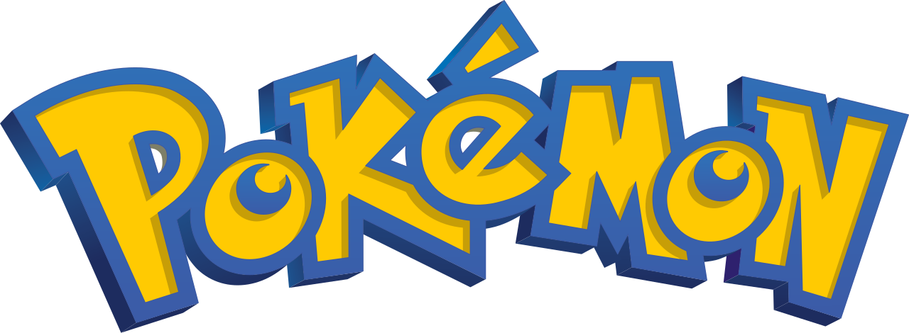

Pokémon é uma franquia conhecida por seus jogos, animações, filmes e cartas colecionáveis.
Um dos principais objetivos dos jogos é capturar e treinar diferentes Pokémon. Cada criatura possui características e habilidades próprias.
Os Pokémon podem possuir diferentes tipos. Os tipos influenciam diretamente as batalhas, criando vantagens e desvantagens.
Nos jogos, o jogador explora diferentes regiões, captura Pokémon e enfrenta outros treinadores.
| Pokémon | Tipo | Geração |
|---|---|---|
| Charizard | Fogo e Voador | Primeira |
| Gengar | Fantasma e Veneno | Primeira |
| Greninja | Água e Sombrio | Sexta |
Veja meus projetos no meu perfil no GitHub .
Entre em contato pelo meu e-mail institucional: gustavo.crisostono@estudante.ifgoiano.edu.br